前言
Hi Coder，我是 CoderStar！
这次主要给大家简单介绍一下我常用的一些Github工具。
Chrome 插件
Octotree
增强 GitHub 代码审查和探索的浏览器扩展，非常建议大家安装，浏览 Github 项目时不要太爽！
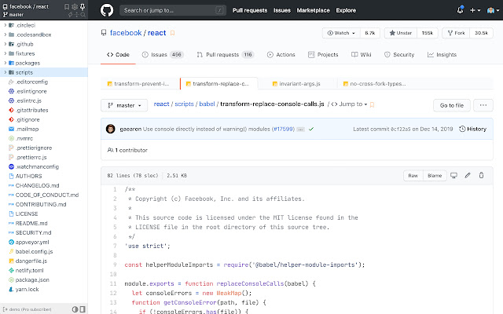
GitHub 黑暗主题
基于 Atom One Dark 的适用于所有 GitHub 的深色主题。
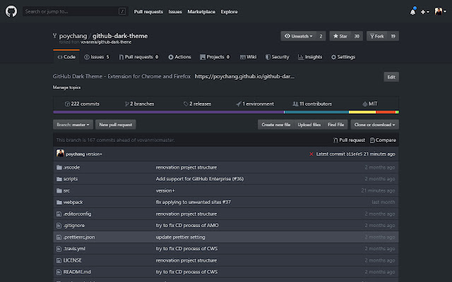
Sourcegraph
向 GitHub、GitLab 和其他主机添加代码智能：悬停、定义、引用，适用于 20 多种语言。就是让我们可以不使用 IDE 来快速查看代码之间的关系
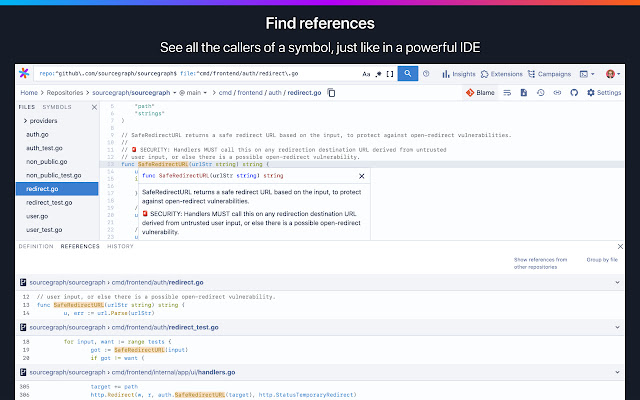
GitZip for github
可以将 github 仓库的子目录和文件压缩成 zip 下载。
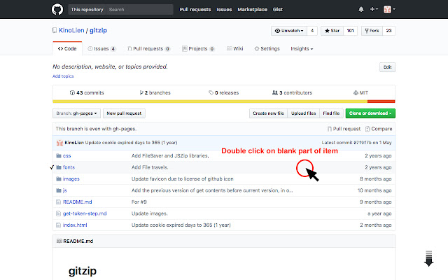
Enhanced GitHub
显示存储库大小、每个文件的大小、下载链接和复制文件内容的选项。

GitHub Hovercard
GitHub 悬浮卡片插件
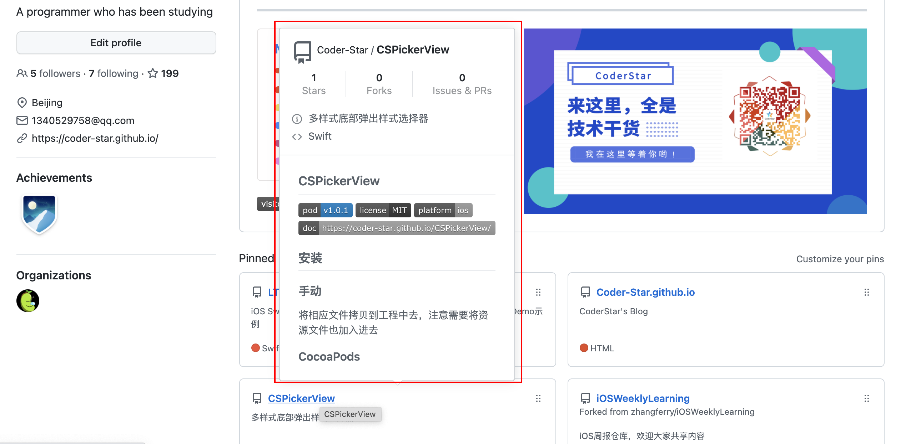
GitHub Isometric Contributions
3D 效果显示 Github 贡献图
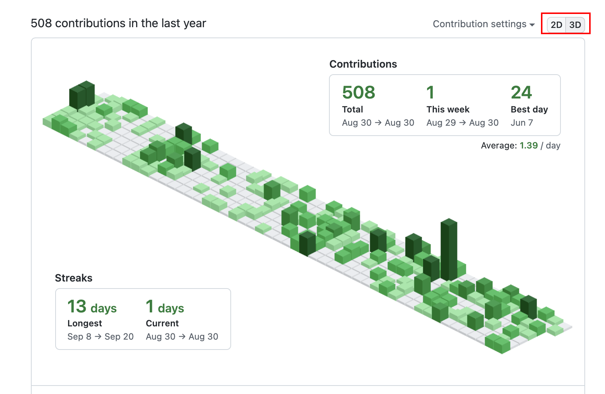
信息展示
shields
通过图标方式表示项目的相关信息，也可以自定义图标，如下所示

github-readme-stats
在你的 README 中获取动态生成的 GitHub 统计信息！如下所示
visitor
统计 README.md, Issues, PRs 等访问人数。如下所示
gitmoj
git 提交信息的 emoji 指南
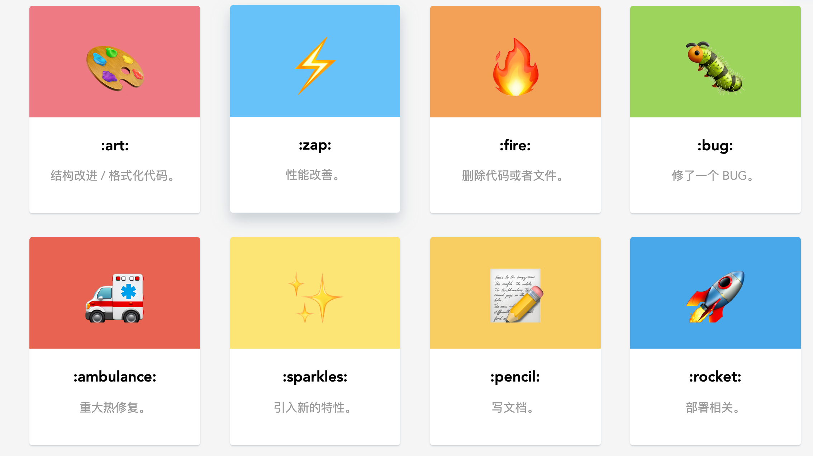
resume
根据你的 github 信息为你生成一份在线简历，如下所示
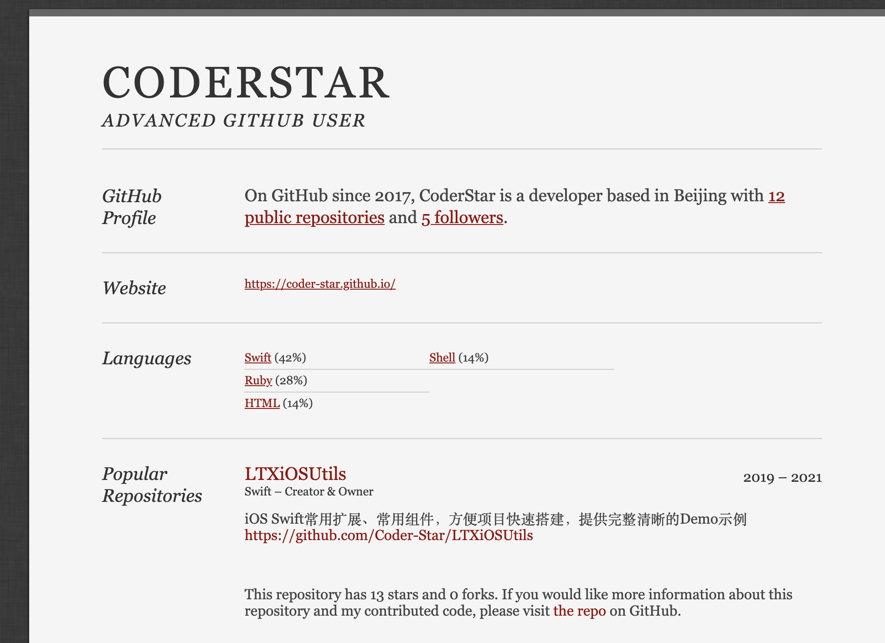
在线工具
DownGit
下载 github 仓库指定文件或文件夹
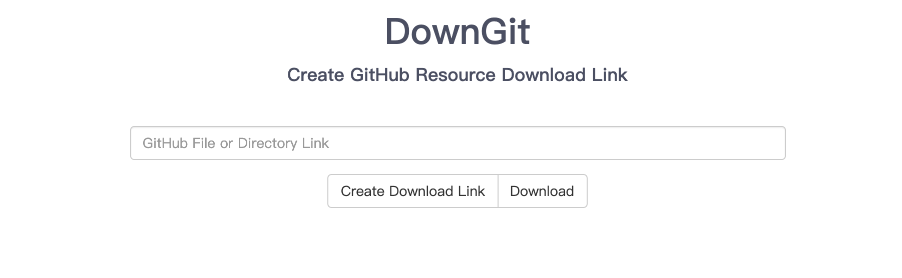
github1s
将 github 仓库前的 github 域名换为 github1s，便能以 VSCode 的形式打开项目，方便查看，但注意不可编辑，是只读的。
如将 https://github.com/Coder-Star/LTXiOSUtils 改为 https://github1s.com/Coder-Star/LTXiOSUtils
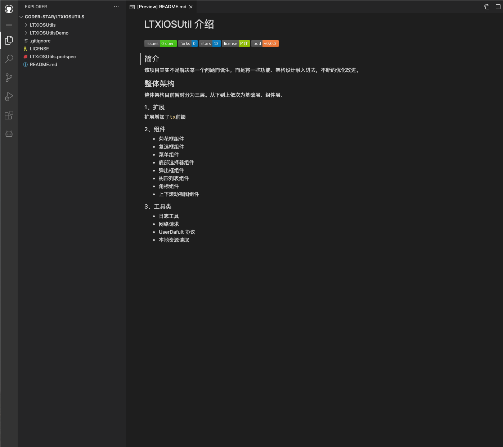
github 提供的 api
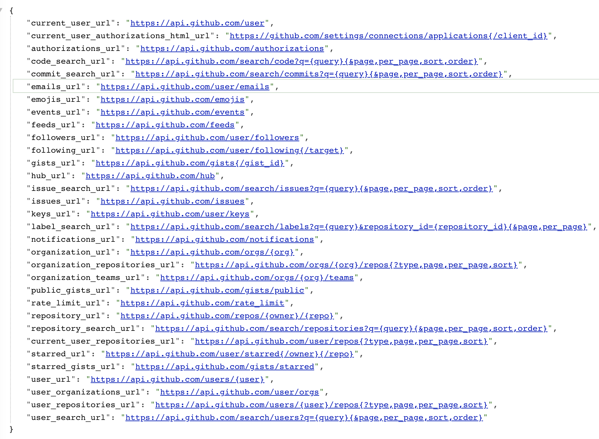
githistory
将 github 某个文件链接前的 github 域名换为 github.githistory.xyz 便可以一个图形化的方式显示该文件的修改历史，如下所示。
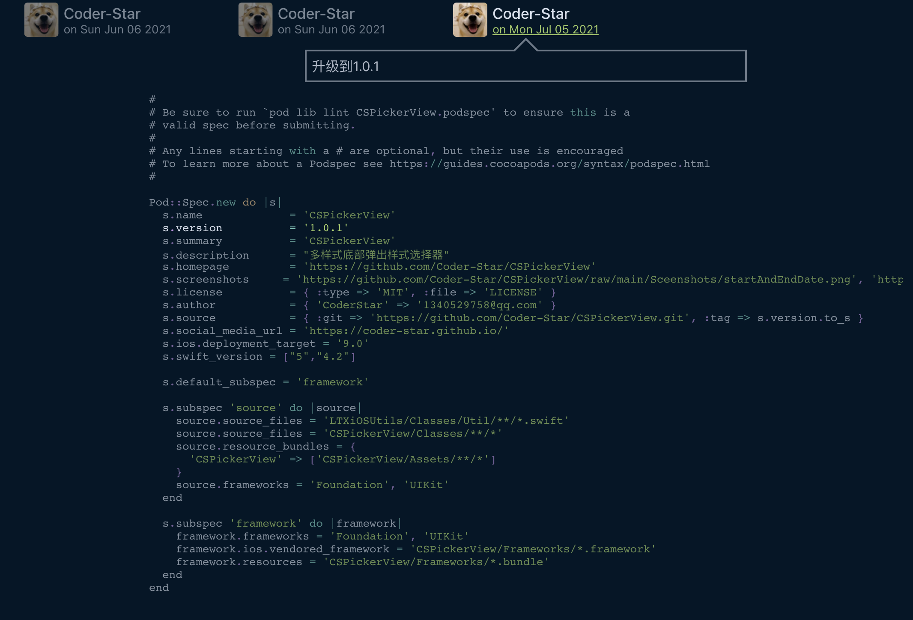
OhMyStar
直接引用官方自己介绍的话吧：
The best way to organise your GitHub Stars. Beautiful and efficient way to manage, explore and share your Github Stars.
普通版免费，Pro 版收费，其中 Pro 版增加的功能是设备间同步，不过软件本身也支持数据的导入导出，大家根据自己的情况进行选择。
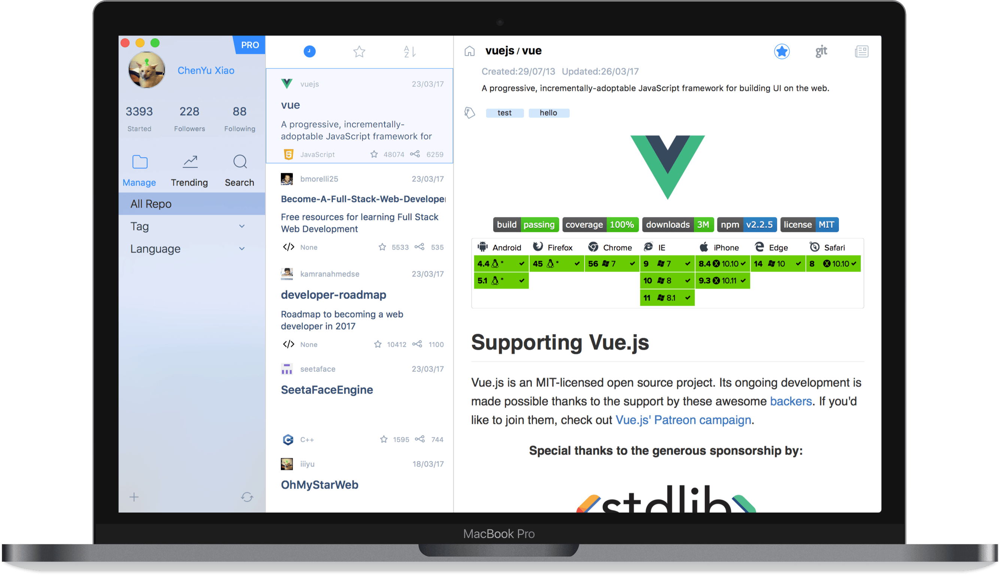
类似管理Github Stars的工具的还有astralapp，是网页端管理。
最后
Let’s be CoderStar!